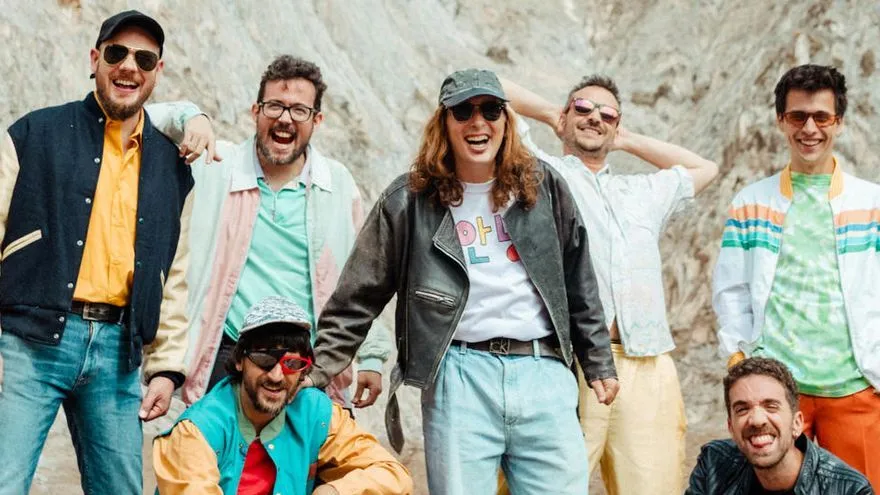
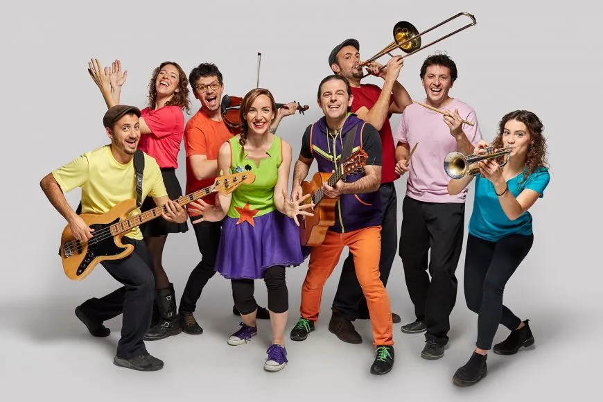

Del 10 a 23 de setembre del 2022 a Vallirana se celebrarà el Festival de Música de Vallirana per primera vegada a la seva història. El concert tindrà lloc en diverses
localitzacions de la localitat on es disposarà d'aforament limitat i servei de bar.
Els Intolerants
El 10 comença el festival de Música amb el concert del grup local Els Intolerants, un grup de música que va néixer el 2019. El grup està format per 4 nois, el bateria,
un violinista, un baixista i el cantant. Ells mateixos es declaren com un grup intransigent d’estils molt variats que va del punk fins al folk, on en destaca la virtuositat
del violinista, fins a la balada rockera. Els components del grup són molt joves, entre 17 i 22 anys, però amb molta energia i una gran qualitat musical. Els Intolerants
actuaran el divendres dia 10 de setembre a les 9 de la nit al parc de les Bassioles. Recordem que les entrades es posaran a la venda pròximament. Esteu atents a les xarxes
socials de L’Ajuntament de Vallirana i a les del Casal Joves de Vallirana.
La Companyia del Cel
El dia 12 de setembre, és el torn del grup musical La Companyia del Cel. Grup de música pop, creat el 2017 al municipi de Torelló. Grup compost per un trio format per dues
cantants i el guitarrista, es defineixen com un grup de música tradicional, que els agrada veure la gent ballar fins que acabant esgotats. El seu repertori musical, va des
dels clàssics de tota la vida fins a temes propis d’estil més modern pel públic més jove. La Companyia del Cel, actuarà a la Rambla de la Sobirania les 8 de la tarda.
L’aforament només es limitarà fins al permès en el mateix espai de la Rambla. Hi haurà servei de bar amb begudes i entrepans. Recordem que les entrades es posaran a la venda
pròximament. Esteu atents a les xarxes socials de la L’Ajuntament de Vallirana i a les del Casal Joves de Vallirana.
Buhos
El dia 20 a les 9 de la nit, tindrà lloc al Parc Central, el concert del grup Català Buhos. Aquest grup es va fundar el 2005 a Calafell, es va fer famós en la seva
primera etapa, per crear cançons sobre el F.C. Barcelona, per cadenes de televisió i ràdio com Ona FM o TV3 amb l’APM. El grup està format per 7 persones, entre elles el
cantant Guillem Solé. En la seva segona etapa que va des del 2014 fins a l’actualitat. El grup ja té en el seu historial 10 dics amb grans èxits com Volcans o la Gran Vida.
Els seus estils van de des del rock fins al reggae, passant pel pop o l’ska. Prevenint el nombre elevat d’assistència, el concert tindrà lloc a la pista del
Parc Central sense límit d’aforament. També tindrà servei de bar i serveis públics repetits per la zona. Recordem que les entrades es posaran a la venda pròximament.
Esteu atents a les xarxes socials de la L’Ajuntament de Vallirana i a les del Casal Joves de Vallirana.

Bùhos en Concert - Regió7
El Pot Petit i els Soprano
Finalment, el dia 23 tindrà lloc el final del Festival de Música de Vallirana, amb dos concerts, de nou al Parc Central. A les 7 de la tarda i pels més petits tindrem a
l’actuació del grup el Pot Petit, grup format per nou músics que tenen ja una gran experiència en fer ballar de valent els més petits de casa. Un cop acabada l’actuació
del Pot Petit, començarà el concert que tancarà aquesta primera edició del Festival de Música de Vallirana, a càrrec del grup musical local, Els Soprano. Un grup format per
tres cantants, que ens oferiran el seu repertori de cançons d’Òpera Clàssica, per tots aquells als qui li agradi la lírica. Recordem que les entrades es posaran a la venda
pròximament. Esteu atents a les xarxes socials de la l’Ajuntament de Vallirana i a les del Casal Joves de Vallirana.

El Pot Petit - Diari de Terrassa
Horari i localitzacions:
Els Intolerants el dia 10 de setembre a les 9 de la nit al Parc de les Bassioles.
La Companyia del Cel al 12 de setembre a les 8 de la tarda a la rambla de la Sobirania.
Buhos el 20 de setembre a les 9 de la nit a la pista del Parc Central.
El Pot Petit el dia 23 de setembre a les 7 de la tarda al Parc Central.
Els Soprano el dia 23 de setembre a l'acabament del concert el Pot Petit al Parc Central.
Les localitzacions estan subjectes a canvis. Recordem que les entrades es posaran a la venda pròximament. Esteu atents a les xarxes socials de la L’Ajuntament de Vallirana i a les del Casal Joves de Vallirana.